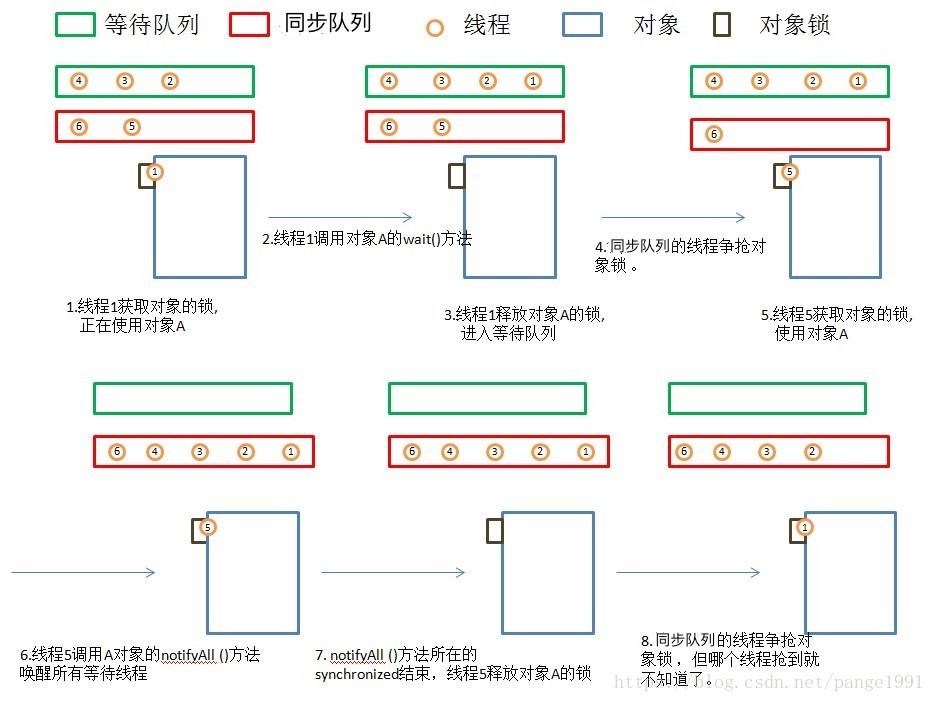

<!DOCTYPE html>


<html lang="en">


<head>
  <meta charset="utf-8" />
    
  <meta name="viewport" content="width=device-width, initial-scale=1, maximum-scale=1" />
  <title>
    Java复习笔记：多线程与并发第一章 |  
  </title>
  <meta name="generator" content="hexo-theme-ayer">
  
  <link rel="shortcut icon" href="/favicon.ico" />
  
  <link rel="stylesheet" href="/dist/main.css">
  <link rel="stylesheet" href="https://cdn.jsdelivr.net/gh/Shen-Yu/cdn/css/remixicon.min.css">
  <link rel="stylesheet" href="/css/custom.css">
  
  <script src="https://cdn.jsdelivr.net/npm/pace-js@1.0.2/pace.min.js"></script>
  
  

  

  <link rel="stylesheet" href="https://cdn.jsdelivr.net/gh/highlightjs/cdn-release@latest/build/styles/vs2015.min.css"><!- highlight.js ->
  <script src="https://cdn.jsdelivr.net/gh/highlightjs/cdn-release@latest/build/highlight.min.js"></script>
  <script>
    hljs.initHighlightingOnLoad();
  </script>
</head>

</html>


<body>
  <div id="app">
    
      
    <main class="content on">
      <section class="outer">
  <article
  id="post-Java复习笔记：多线程与并发第一章"
  class="article article-type-post"
  itemscope
  itemprop="blogPost"
  data-scroll-reveal
>
  <div class="article-inner">
    
    <header class="article-header">
       
<h1 class="article-title sea-center" style="border-left:0" itemprop="name">
  Java复习笔记：多线程与并发第一章
</h1>
 

    </header>
     
    <div class="article-meta">
      <a href="/2019/11/13/Java%E5%A4%8D%E4%B9%A0%E7%AC%94%E8%AE%B0%EF%BC%9A%E5%A4%9A%E7%BA%BF%E7%A8%8B%E4%B8%8E%E5%B9%B6%E5%8F%91%E7%AC%AC%E4%B8%80%E7%AB%A0/" class="article-date">
  <time datetime="2019-11-13T09:07:53.000Z" itemprop="datePublished">2019-11-13</time>
</a> 
  <div class="article-category">
    <a class="article-category-link" href="/categories/%E5%90%8E%E7%AB%AF/">后端</a>
  </div>

  
<div class="word_count">
    <span class="post-time">
        <span class="post-meta-item-icon">
            <i class="ri-quill-pen-line"></i>
            <span class="post-meta-item-text"> Word count:</span>
            <span class="post-count">4.6k</span>
        </span>
    </span>

    <span class="post-time">
        &nbsp; | &nbsp;
        <span class="post-meta-item-icon">
            <i class="ri-book-open-line"></i>
            <span class="post-meta-item-text"> Reading time≈</span>
            <span class="post-count">22 min</span>
        </span>
    </span>
</div>
 
    </div>
      
    <div class="tocbot"></div>


  
    <div class="article-entry" itemprop="articleBody">
       
  <h2 id="基本概念回顾"><a href="#基本概念回顾" class="headerlink" title="基本概念回顾"></a>基本概念回顾</h2><h3 id="进程和线程的区别"><a href="#进程和线程的区别" class="headerlink" title="进程和线程的区别"></a>进程和线程的区别</h3><h4 id="进程和线程的由来"><a href="#进程和线程的由来" class="headerlink" title="进程和线程的由来"></a>进程和线程的由来</h4><ol>
<li>串行：早起的计算机只能执行串行任务，并且遇到用户输入的操作时便会阻塞</li>
<li>批处理：预先将用户的指令集中成清单，批量串行处理用户指令，仍无法并发执行</li>
<li>进程：进程独占内存空间，保存各自运行状态，相互不干扰且可以互相切换，为并发处理任务提供了可能</li>
<li>线程：共享进程的内存资源，相互间切换更便捷，支持更细粒度的任务控制，让进程内的子任务得以并发执行</li>
</ol>
<h4 id="区别"><a href="#区别" class="headerlink" title="区别"></a>区别</h4><p><strong>进程和线程都是一个时间段的描述，是CPU工作时间段的描述。进程和线程都是一个时间段的描述，是CPU工作时间段的描述，不过是颗粒大小不同。</strong></p>
<p>所有与进程相关的资源都被记录在<a href="https://baike.baidu.com/item/PCB/16067368?fr=aladdin" target="_blank" rel="noopener">PCB(PCB Process Control Block)</a>中。</p>
<p>PCB:</p>
<ul>
<li>描述信息</li>
<li>控制信息</li>
<li>资源信息<ul>
<li>程序段</li>
<li>数据段</li>
</ul>
</li>
<li>CPU现场</li>
</ul>
<blockquote>
<p>它是进程实体的一部分，是操作系统中最重要的记录性数据结构。它是进程管理和控制的最重要的数据结构，每一个进程均有一个PCB，在创建进程时，建立PCB，伴随进程运行的全过程，直到进程撤消而撤消。</p>
</blockquote>
<p>进程拥有完整的<a href="https://blog.csdn.net/u014379540/article/details/52263114" target="_blank" rel="noopener">虚拟内存地址空间</a>，而同一进程下的线程则共享该进程拥有的内存空间。</p>
<p>线程的组成：</p>
<ul>
<li>堆栈寄存器</li>
<li>程序计数器</li>
<li>TCB</li>
</ul>
<p>进程就是包括上下文切换的程序执行时间总和 = CPU加载上下文+CPU执行+CPU保存上下文。</p>


<p>进程的颗粒度太大，每次都要有上下的调入，保存，调出。</p>
<p>假设存在进程A，其实际分成 a，b，c等多个块组合而成。那么这里具体的执行就可能变成：</p>
<p>进程A得到CPU-&gt;CPU加载上下文，开始执行程序A的a小段，然后执行A的b小段，然后再执行A的c小段，最后CPU保存A的上下文。</p>
<p>这里的a，b，c就是线程，也就是说线程是共享了进程的上下文环境，的更为细小的CPU时间段。</p>
<p><strong>进程是资源分配的最小单位，线程是CPU调度的最小单位。</strong></p>
<h3 id="Linux用户态和内核态转换"><a href="#Linux用户态和内核态转换" class="headerlink" title="Linux用户态和内核态转换"></a>Linux用户态和内核态转换</h3><h4 id="为什么需要转换"><a href="#为什么需要转换" class="headerlink" title="为什么需要转换"></a>为什么需要转换</h4><h4 id="内核态的多线程是如何通过轻量级线程来实现的"><a href="#内核态的多线程是如何通过轻量级线程来实现的" class="headerlink" title="内核态的多线程是如何通过轻量级线程来实现的"></a>内核态的多线程是如何通过轻量级线程来实现的</h4><h3 id="什么是系统中断"><a href="#什么是系统中断" class="headerlink" title="什么是系统中断"></a>什么是系统中断</h3><h2 id="Java中的进程和线程"><a href="#Java中的进程和线程" class="headerlink" title="Java中的进程和线程"></a>Java中的进程和线程</h2><h3 id="Java进程和线程的关系"><a href="#Java进程和线程的关系" class="headerlink" title="Java进程和线程的关系"></a>Java进程和线程的关系</h3><ul>
<li>运行一个程序会产生一个进程，进程包含至少一个线程</li>
<li>每个进程对应一个JVM实例，多个线程共享JVM里的堆</li>
<li>Java采用单线程编程模型，程序会自动创建主线程</li>
</ul>
<h3 id="Thread中的start和run方法的区别"><a href="#Thread中的start和run方法的区别" class="headerlink" title="Thread中的start和run方法的区别"></a>Thread中的<code>start</code>和<code>run</code>方法的区别</h3><p>使用<code>run</code>方法会继续使用主线程来执行重写的<code>run</code>方法里面的内容，而使用<code>start</code>方法则会开一个新线程来执行。</p>
<p>我们看一下start方法源码</p>
<blockquote>
<p>Thread.java</p>
</blockquote>
<pre><code class="java">/**
     * Causes this thread to begin execution; the Java Virtual Machine
     * calls the &lt;code&gt;run&lt;/code&gt; method of this thread.
     * &lt;p&gt;
     * The result is that two threads are running concurrently: the
     * current thread (which returns from the call to the
     * &lt;code&gt;start&lt;/code&gt; method) and the other thread (which executes its
     * &lt;code&gt;run&lt;/code&gt; method).
     * &lt;p&gt;
     * It is never legal to start a thread more than once.
     * In particular, a thread may not be restarted once it has completed
     * execution.
     *
     * @exception  IllegalThreadStateException  if the thread was already
     *               started.
     * @see        #run()
     * @see        #stop()
     */
    public synchronized void start() {
        /**
         * This method is not invoked for the main method thread or &quot;system&quot;
         * group threads created/set up by the VM. Any new functionality added
         * to this method in the future may have to also be added to the VM.
         *
         * A zero status value corresponds to state &quot;NEW&quot;.
         */
        if (threadStatus != 0)
            throw new IllegalThreadStateException();

        /* Notify the group that this thread is about to be started
         * so that it can be added to the group&#39;s list of threads
         * and the group&#39;s unstarted count can be decremented. */
        group.add(this);

        boolean started = false;
        try {
            start0();
            started = true;
        } finally {
            try {
                if (!started) {
                    group.threadStartFailed(this);
                }
            } catch (Throwable ignore) {
                /* do nothing. If start0 threw a Throwable then
                  it will be passed up the call stack */
            }
        }
    }

    private native void start0();</code></pre>
<p>可以看到在<code>start</code>方法里面主要是使用到了一个native的方法<code>start0()</code>，该方法调用到了外部的非Java的源码。</p>
<p>可以访问<a href="http://hg.openjdk.java.net/" target="_blank" rel="noopener">OpenJKD</a>来查询</p>
<p><a href="http://hg.openjdk.java.net/jdk8u/jdk8u/jdk/file/dd10fb830ea9/src/share/native/java/lang/Thread.c" target="_blank" rel="noopener">JKD8 Thread.c源码</a></p>
<blockquote>
<p>Thread.c</p>
</blockquote>
<pre><code class="c">#include &quot;jni.h&quot;
#include &quot;jvm.h&quot;

#include &quot;java_lang_Thread.h&quot;

#define THD &quot;Ljava/lang/Thread;&quot;
#define OBJ &quot;Ljava/lang/Object;&quot;
#define STE &quot;Ljava/lang/StackTraceElement;&quot;
#define STR &quot;Ljava/lang/String;&quot;

#define ARRAY_LENGTH(a) (sizeof(a)/sizeof(a[0]))

static JNINativeMethod methods[] = {
    {&quot;start0&quot;,           &quot;()V&quot;,        (void *)&amp;JVM_StartThread},
    {&quot;stop0&quot;,            &quot;(&quot; OBJ &quot;)V&quot;, (void *)&amp;JVM_StopThread},
    {&quot;isAlive&quot;,          &quot;()Z&quot;,        (void *)&amp;JVM_IsThreadAlive},
    {&quot;suspend0&quot;,         &quot;()V&quot;,        (void *)&amp;JVM_SuspendThread},
    {&quot;resume0&quot;,          &quot;()V&quot;,        (void *)&amp;JVM_ResumeThread},
    {&quot;setPriority0&quot;,     &quot;(I)V&quot;,       (void *)&amp;JVM_SetThreadPriority},
    {&quot;yield&quot;,            &quot;()V&quot;,        (void *)&amp;JVM_Yield},
    {&quot;sleep&quot;,            &quot;(J)V&quot;,       (void *)&amp;JVM_Sleep},
    {&quot;currentThread&quot;,    &quot;()&quot; THD,     (void *)&amp;JVM_CurrentThread},
    {&quot;countStackFrames&quot;, &quot;()I&quot;,        (void *)&amp;JVM_CountStackFrames},
    {&quot;interrupt0&quot;,       &quot;()V&quot;,        (void *)&amp;JVM_Interrupt},
    {&quot;isInterrupted&quot;,    &quot;(Z)Z&quot;,       (void *)&amp;JVM_IsInterrupted},
    {&quot;holdsLock&quot;,        &quot;(&quot; OBJ &quot;)Z&quot;, (void *)&amp;JVM_HoldsLock},
    {&quot;getThreads&quot;,        &quot;()[&quot; THD,   (void *)&amp;JVM_GetAllThreads},
    {&quot;dumpThreads&quot;,      &quot;([&quot; THD &quot;)[[&quot; STE, (void *)&amp;JVM_DumpThreads},
    {&quot;setNativeName&quot;,    &quot;(&quot; STR &quot;)V&quot;, (void *)&amp;JVM_SetNativeThreadName},
};

#undef THD
#undef OBJ
#undef STE
#undef STR

JNIEXPORT void JNICALL
Java_java_lang_Thread_registerNatives(JNIEnv *env, jclass cls)
{
    (*env)-&gt;RegisterNatives(env, cls, methods, ARRAY_LENGTH(methods));
}</code></pre>
<p>可以看到<code>start0</code>方法调用到了<code>JVM_StartThread</code>方法，而该方法引自<code>jvm.h</code></p>
<p><a href="http://hg.openjdk.java.net/jdk8u/jdk8u/hotspot/file/b44df6c5942c/src/share/vm/prims/jvm.cpp" target="_blank" rel="noopener">JDK8 jvm.cpp源码</a></p>
<p>在jvm.cpp下的<code>JVM_StartThread</code>方法里有下面这句话用于创建一个线程</p>
<blockquote>
<p>jvm.cpp</p>
</blockquote>
<pre><code class="c">native_thread = new JavaThread(&amp;thread_entry, sz);</code></pre>
<p>搜索上面用于创建线程的方法传入的参数<code>thread_entry</code></p>
<pre><code class="c">static void thread_entry(JavaThread* thread, TRAPS) {
  HandleMark hm(THREAD);
  Handle obj(THREAD, thread-&gt;threadObj());
  JavaValue result(T_VOID);
  JavaCalls::call_virtual(&amp;result,
                          obj,
                          KlassHandle(THREAD, SystemDictionary::Thread_klass()),
                          vmSymbols::run_method_name(),
                          vmSymbols::void_method_signature(),
                          THREAD);
}</code></pre>
<p>可以看到该方法最后会调用JVM虚拟机<code>JavaCalls::call_virtual</code>，并传入<code>run_method_name</code></p>
<p>综上所述：</p>
<ul>
<li>调用<code>start</code>方法会：Thread#start()-&gt;JVM_StartThread-&gt;thread_entry-&gt;Thread#run()<ul>
<li>在<code>thread_entry</code>时创建一个新的子线程并启动去运行Thread#run()里的方法体</li>
</ul>
</li>
<li>调用<code>run</code>方法会：Thread#run()<ul>
<li>当做一个普通的方法调用去调用Thread#run()里的方法体</li>
</ul>
</li>
</ul>
<h3 id="Thread和-Runnable是什么关系"><a href="#Thread和-Runnable是什么关系" class="headerlink" title="Thread和 Runnable是什么关系"></a>Thread和 Runnable是什么关系</h3><ul>
<li>Thread类实现了Runnable接口，使得run支持多线程</li>
<li>因为类的单一继承原则，推荐使用Runnable接口</li>
</ul>
<p>实现了Runnable接口是没有start方法的，需要把其对象作为参数去创建一个Thread对象再调用start方法启动</p>
<h3 id="如何给run-方法传参"><a href="#如何给run-方法传参" class="headerlink" title="如何给run()方法传参"></a>如何给<code>run()</code>方法传参</h3><ol>
<li>构造函数传参</li>
<li>成员变量传参</li>
<li>回调函数传参</li>
</ol>
<h3 id="处理线程的返回值"><a href="#处理线程的返回值" class="headerlink" title="处理线程的返回值"></a>处理线程的返回值</h3><ol>
<li>主线程等待法：让主线程循环等待直到子线程返回</li>
<li>使用Thread类的<code>join()</code>阻塞当前主线程以等待子线程处理完毕<pre><code class="java">public class Test implements Runnable {
 @Override
 void run() {
     try {
         Thread.currentThread.sleep(5000);
     } catch (InterruptedException e) {
         e.printStackTrace();
     }
     value = &quot;data&quot;;
 }
 public static void main(String[] args) throws InterruptedException {
     Test test = new Test();
     Thread t = new Thread(test);
     t.start();
     t.join();
     System.out.println(&quot;value:&quot; + cw.value);
 }
}</code></pre>
</li>
<li>通过Callable接口实现：通过FutureTask or 线程池获取</li>
</ol>
<pre><code class="java">// 通过FutureTask
public class MyCallable implements Callable&lt;String&gt; {
    @Override
    public String call() throws Exception{
        String value=&quot;test&quot;;
        System.out.println(&quot;ready to work&quot;);
        Thread.currentThread().sleep(5000);
        System.out.println(&quot;Task down&quot;);
        return value;
    }
}

public class FutureTaskDemo {
    public static void main(String[] args) throws InterruptedException {
        FutureTask&lt;String&gt; task = new FutureTask&lt;&gt;(new MyCallable());
        new Thread(task);
        if(!task.isDone()){
            System.out.println(&quot;task has not finished, please wait&quot;);
        }
        // 显示MyCallable里面的返回值
        System.out.println(&quot;task return:&quot; + task.get());
    }
}</code></pre>
<pre><code class="java">// 通过线程池
public class ThreadPoolDemo {
    public static void main(String[] args) throws InterruptedException {
        ExecutorService newPool = Executors.newCachedThreadPool();
        Future&lt;String&gt; future = newPool.submit(new MyCallable());
        if (!task.isDone()) {
            System.out.println(&quot;task has not finished, please wait&quot;);
        }
        // 显示MyCallable里面的返回值
        try {
            System.out.println(&quot;task return:&quot; + task.get());
        } catch (InterruptedException e) {
            e.printStackTrace();
        } catch (ExecutionException e) {
            e.printStackTrace();
        } finally {
            newPool.shutdown();
        }
    }
}</code></pre>
<h3 id="sleep和wait的区别"><a href="#sleep和wait的区别" class="headerlink" title="sleep和wait的区别"></a><code>sleep</code>和<code>wait</code>的区别</h3><ul>
<li><code>sleep</code>是Thread类的方法，<code>wait</code>是Object类中定义的方法</li>
<li><code>sleep</code>方法可以在任何地方使用</li>
<li><code>wait</code>方法只能在<code>synchronized</code>方法或<code>synchronized</code>快中使用</li>
<li><code>Thread.sleep</code>只会让出CPU，不会导致锁行为的改变</li>
<li><code>Object.wait</code>不仅会让出CPU，还会释放已经占有的同步资源</li>
</ul>
<pre><code class="java">public class WaitSleepDemo {

  public static void main(String[] args) {
    final Object lock = new Object();
    new Thread(new Runnable() {
      @Override
      public void run() {
        System.out.println(&quot;thread A is waiting to get lock&quot;);
        synchronized (lock) {
          try {
            System.out.println(&quot;thread A get lock&quot;);
            Thread.sleep(20);
            System.out.println(&quot;thread A do wait lock&quot;);
            lock.wait(1000);
            System.out.println(&quot;thread A is done&quot;);
          } catch (InterruptedException e) {
            e.printStackTrace();
          }
        }
      }
    }).start();
    try {
      Thread.sleep(10);
    } catch (InterruptedException e) {
      e.printStackTrace();
    }
    new Thread(new Runnable() {
      @Override
      public void run() {
        System.out.println(&quot;thread B is waiting to get lock&quot;);
        synchronized (lock) {
          try {
            System.out.println(&quot;thread B get lock&quot;);
            System.out.println(&quot;thread B sleeping 10 ms&quot;);
            Thread.sleep(10);
            System.out.println(&quot;thread B is done&quot;);
          } catch (InterruptedException e) {
            e.printStackTrace();
          }
        }
      }
    }).start();
  }
}</code></pre>
<pre><code>thread A is waiting to get lock
thread A get lock
thread B is waiting to get lock
thread A do wait lock
thread B get lock
thread B sleeping 10 ms
thread B is done
thread A is done</code></pre><p>观察输出可发现，在A获得锁之后B开始等待锁，而A开始wait之后B就获得了锁</p>
<h3 id="notify和notifyAll的区别"><a href="#notify和notifyAll的区别" class="headerlink" title="notify和notifyAll的区别"></a><code>notify</code>和<code>notifyAll</code>的区别</h3><p>锁池 EntryList：假设线程A已经拥有了某对象的锁，而其它线程B、C想要调用这个对象的某个<code>synchronized</code>方法(或块)之前必须先获得该对象锁的拥有权，而恰巧该对象的锁目前正被线程A占用，此时B、C线程就会被阻塞，进入一个地方去等待锁的释放，这个地方便是该对象的锁池。</p>
<p>等待池 WaitSet：假设线程A调用了某个对象的<code>wait()</code>方法，线程A就会释放该对象的锁，同时线程A就进入到了该对象的等待池中，进入到等待池中的线程不会去竞争该对象的锁。</p>
<ul>
<li><code>notifyAll</code>会让所有处于等待池中的线程全部进入锁池去竞争获取锁的机会</li>
<li><code>notify</code>会随机选取一个处于等待池中的线程进入锁池去竞争获取锁的机会</li>
</ul>
<pre><code class="java">public class WaitSleepDemo {

  public static void main(String[] args) {
    final Object lock = new Object();
    new Thread(new Runnable() {
      @Override
      public void run() {
        System.out.println(&quot;thread A is waiting to get lock&quot;);
        synchronized (lock) {
          try {
            System.out.println(&quot;thread A get lock&quot;);
            Thread.sleep(20);
            System.out.println(&quot;thread A do wait lock&quot;);
            lock.wait();
            System.out.println(&quot;thread A is done&quot;);
          } catch (InterruptedException e) {
            e.printStackTrace();
          }
        }
      }
    }).start();
    try {
      Thread.sleep(10);
    } catch (InterruptedException e) {
      e.printStackTrace();
    }
    new Thread(new Runnable() {
      @Override
      public void run() {
        System.out.println(&quot;thread B is waiting to get lock&quot;);
        synchronized (lock) {
          try {
            System.out.println(&quot;thread B get lock&quot;);
            System.out.println(&quot;thread B sleeping 10 ms&quot;);
            Thread.sleep(10);
            System.out.println(&quot;thread B is done&quot;);
            lock.notify(); // or lock.notifyAll();
          } catch (InterruptedException e) {
            e.printStackTrace();
          }
        }
      }
    }).start();
  }
}</code></pre>
<pre><code class="java">public class NotificationDemo {
  private volatile boolean go = false;
  private synchronized void go() {
    while (go == false) {
      System.out.println(Thread.currentThread() + &quot; is going to notify all or one thread waiting on&quot;);
      go = true;
      notify();
    }
  }
  private synchronized void shouldGo() throws InterruptedException {
    while (go != true) {
      System.out.println(Thread.currentThread() + &quot; is going to wait on this object&quot;);
      wait();
      System.out.println(Thread.currentThread() + &quot; is woken up&quot;);
    }
    go = false;
  }
  public static void main(String[] args) throws InterruptedException {
    final NotificationDemo test = new NotificationDemo();
    Runnable waitTask = new Runnable() {
      @Override
      public void run() {
        try {
          test.shouldGo();
        } catch (InterruptedException e) {
          e.printStackTrace();
        }
        System.out.println(Thread.currentThread().getName() + &quot; finished Execution&quot;);
      }
    };

    Runnable notifyTask = new Runnable() {
      @Override
      public void run() {
        test.go();
        System.out.println(Thread.currentThread().getName() + &quot; finished Execution&quot;);
      }
    };

    Thread t1 = new Thread(waitTask, &quot;WT1&quot;);
    Thread t2 = new Thread(waitTask, &quot;WT2&quot;);
    Thread t3 = new Thread(waitTask, &quot;WT3&quot;);
    Thread t4 = new Thread(notifyTask, &quot;NT1&quot;);

    t1.start();
    t2.start();
    t3.start();

    Thread.sleep(200);

    t4.start();
  }
}</code></pre>
<pre><code>Thread[WT1,5,main] is going to wait on this object
Thread[WT2,5,main] is going to wait on this object
Thread[WT3,5,main] is going to wait on this object
Thread[NT1,5,main] is going to notify all or one thread waiting on
Thread[WT1,5,main] is woken up
NT1 finished Execution
WT1 finished Execution</code></pre><ol>
<li>从输出来看前3行是WT1、WT2、WT3依次进入等待池，</li>
<li>之后NT1调用<code>notify</code>方法随机唤醒一个线程将其置入锁池，并修改<code>go = true;</code>跳出循环</li>
<li>这里是WT1被置入锁池，因为上一步中<code>go</code>的值被修改所以跳出循环，WT1获得锁并且修改了变量<code>go = false;</code>，然后因为NT1线程已经结束所以剩下两个线程WT2、WT3依然处于等待池。</li>
</ol>
<h3 id="yield"><a href="#yield" class="headerlink" title="yield"></a><code>yield</code></h3><p>当调用<code>Thread.yield()</code>时会给线程调度器<code>scheduler</code>一个当前线程愿意让出CPU的使用的信号，但是调度去可能会无视该暗示。</p>
<blockquote>
<p>Thread.java</p>
</blockquote>
<pre><code class="java">    /**
     * A hint to the scheduler that the current thread is willing to yield
     * its current use of a processor. The scheduler is free to ignore this
     * hint.
     *
     * &lt;p&gt; Yield is a heuristic attempt to improve relative progression
     * between threads that would otherwise over-utilise a CPU. Its use
     * should be combined with detailed profiling and benchmarking to
     * ensure that it actually has the desired effect.
     *
     * &lt;p&gt; It is rarely appropriate to use this method. It may be useful
     * for debugging or testing purposes, where it may help to reproduce
     * bugs due to race conditions. It may also be useful when designing
     * concurrency control constructs such as the ones in the
     * {@link java.util.concurrent.locks} package.
     */
    public static native void yield();</code></pre>
<pre><code class="java">public class YieldDemo {
  public static void main(String[] args) {
    Runnable yieldTask = new Runnable() {
      @Override
      public void run() {
        for (int i = 0; i &lt;= 10; i++) {
          System.out.println(Thread.currentThread().getName() + i);
          if (i == 5) {
            Thread.yield();
          }
        }
      }
    };
    Thread t1 = new Thread(yieldTask, &quot;A&quot;);
    Thread t2 = new Thread(yieldTask, &quot;B&quot;);
    t1.start();
    t2.start();
  }
}</code></pre>
<p>输出：</p>
<pre><code>A0
B0
A1
B1
A2
B2
A3
B3
A4
B4
B5
A5
B6
B7
B8
B9
B10
A6
A7
A8
A9
A10</code></pre><p>可以看出当A线程执行到5时把CPU让给了B来执行，直到B执行到10把B让给A</p>
<h3 id="使用interrupt来中断线程"><a href="#使用interrupt来中断线程" class="headerlink" title="使用interrupt来中断线程"></a>使用<code>interrupt</code>来中断线程</h3><p>已被抛弃的方法：</p>
<ul>
<li><del><code>stop()</code></del>：过于暴力，被中断线程可能没有释放锁</li>
<li><del><code>suspend()</code></del>, <del><code>resume()</code></del></li>
</ul>
<p><code>interrupt()</code></p>
<ul>
<li>如果线程处于被阻塞状态，那么线程将立即退出被阻塞状态，并抛出一个<code>InterruptedException</code>异常</li>
<li>如果线程处于正常状态，那么线程会将该线程的中断标志设置为true。被设置中断标志的线程将继续正常运行，不受影响。</li>
</ul>
<pre><code class="java">public class InterruptDemo {

  public static void main(String[] args) throws InterruptedException {
    Runnable interruptTask = new Runnable() {
      @Override
      public void run() {
        int i = 0;
        try {
          // 在正常运行任务时，经常检查本线程的中断标志位，如果设置了中断标志就自行停止线程
          while (!Thread.currentThread().isInterrupted()) {
            Thread.sleep(100);
            i++;
            System.out.println(Thread.currentThread().getName() + &quot; (&quot; + Thread.currentThread().getState()+ &quot;) loop:i=&quot; + i);
          }
        } catch (InterruptedException e) {
          // 在调用阻塞方法时正确处理InterruptedException异常
          System.out.println(Thread.currentThread().getName()+ &quot; (&quot; + Thread.currentThread().getState() + &quot;) catch InterruptedException&quot;);
        }
      }
    };
    Thread t1 = new Thread(interruptTask, &quot;t1&quot;);
    System.out.println(t1.getName() + &quot; (&quot; + t1.getState() + &quot;) is new.&quot;);

    t1.start();
    System.out.println(t1.getName() + &quot; (&quot; + t1.getState() + &quot;) is started.&quot;);

    Thread.sleep(300);
    t1.interrupt();
    System.out.println(t1.getName() + &quot; (&quot; + t1.getState() + &quot;) is interrupted.&quot;);

    Thread.sleep(300);
    System.out.println(t1.getName() + &quot; (&quot; + t1.getState() + &quot;) is interrupted now.&quot;);
  }
}</code></pre>
<p>输出：</p>
<pre><code>t1 (NEW) is new.
t1 (RUNNABLE) is started.
t1 (RUNNABLE) loop:i=1
t1 (RUNNABLE) loop:i=2
t1 (RUNNABLE) catch InterruptedException
t1 (RUNNABLE) is interrupted.
t1 (TERMINATED) is interrupted now.</code></pre><h2 id="线程的状态"><a href="#线程的状态" class="headerlink" title="线程的状态"></a>线程的状态</h2><blockquote>
<p>Thread.java</p>
</blockquote>
<pre><code class="java">    /**
     * A thread state.  A thread can be in one of the following states:
     * &lt;ul&gt;
     * &lt;li&gt;{@link #NEW}&lt;br&gt;
     *     A thread that has not yet started is in this state.
     *     &lt;/li&gt;
     * &lt;li&gt;{@link #RUNNABLE}&lt;br&gt;
     *     A thread executing in the Java virtual machine is in this state.
     *     &lt;/li&gt;
     * &lt;li&gt;{@link #BLOCKED}&lt;br&gt;
     *     A thread that is blocked waiting for a monitor lock
     *     is in this state.
     *     &lt;/li&gt;
     * &lt;li&gt;{@link #WAITING}&lt;br&gt;
     *     A thread that is waiting indefinitely for another thread to
     *     perform a particular action is in this state.
     *     &lt;/li&gt;
     * &lt;li&gt;{@link #TIMED_WAITING}&lt;br&gt;
     *     A thread that is waiting for another thread to perform an action
     *     for up to a specified waiting time is in this state.
     *     &lt;/li&gt;
     * &lt;li&gt;{@link #TERMINATED}&lt;br&gt;
     *     A thread that has exited is in this state.
     *     &lt;/li&gt;
     * &lt;/ul&gt;
     *
     * &lt;p&gt;
     * A thread can be in only one state at a given point in time.
     * These states are virtual machine states which do not reflect
     * any operating system thread states.
     *
     * @since   1.5
     * @see #getState
     */
    public enum State {
        /**
         * Thread state for a thread which has not yet started.
         */
        NEW,

        /**
         * Thread state for a runnable thread.  A thread in the runnable
         * state is executing in the Java virtual machine but it may
         * be waiting for other resources from the operating system
         * such as processor.
         */
        RUNNABLE,

        /**
         * Thread state for a thread blocked waiting for a monitor lock.
         * A thread in the blocked state is waiting for a monitor lock
         * to enter a synchronized block/method or
         * reenter a synchronized block/method after calling
         * {@link Object#wait() Object.wait}.
         */
        BLOCKED,

        /**
         * Thread state for a waiting thread.
         * A thread is in the waiting state due to calling one of the
         * following methods:
         * &lt;ul&gt;
         *   &lt;li&gt;{@link Object#wait() Object.wait} with no timeout&lt;/li&gt;
         *   &lt;li&gt;{@link #join() Thread.join} with no timeout&lt;/li&gt;
         *   &lt;li&gt;{@link LockSupport#park() LockSupport.park}&lt;/li&gt;
         * &lt;/ul&gt;
         *
         * &lt;p&gt;A thread in the waiting state is waiting for another thread to
         * perform a particular action.
         *
         * For example, a thread that has called &lt;tt&gt;Object.wait()&lt;/tt&gt;
         * on an object is waiting for another thread to call
         * &lt;tt&gt;Object.notify()&lt;/tt&gt; or &lt;tt&gt;Object.notifyAll()&lt;/tt&gt; on
         * that object. A thread that has called &lt;tt&gt;Thread.join()&lt;/tt&gt;
         * is waiting for a specified thread to terminate.
         */
        WAITING,

        /**
         * Thread state for a waiting thread with a specified waiting time.
         * A thread is in the timed waiting state due to calling one of
         * the following methods with a specified positive waiting time:
         * &lt;ul&gt;
         *   &lt;li&gt;{@link #sleep Thread.sleep}&lt;/li&gt;
         *   &lt;li&gt;{@link Object#wait(long) Object.wait} with timeout&lt;/li&gt;
         *   &lt;li&gt;{@link #join(long) Thread.join} with timeout&lt;/li&gt;
         *   &lt;li&gt;{@link LockSupport#parkNanos LockSupport.parkNanos}&lt;/li&gt;
         *   &lt;li&gt;{@link LockSupport#parkUntil LockSupport.parkUntil}&lt;/li&gt;
         * &lt;/ul&gt;
         */
        TIMED_WAITING,

        /**
         * Thread state for a terminated thread.
         * The thread has completed execution.
         */
        TERMINATED;
    }</code></pre>
<p>Java线程状态：</p>
<ol>
<li>新建(NEW)：创建后尚未启动的线程状态</li>
<li>运行(RUNNABLE)：包含Running(正在执行)和Ready(正在等待CPU分配时间片)<ul>
<li>Ready(正在等待CPU分配时间片)：其它线程调用了该对象的<code>start()</code>方法，该线程位于可运行线程池中，等待被线程调度选中，获取CPU使用权。</li>
<li>Running(正在执行)：就绪状态的线程在获得CPU时间片后变为运行中状态(running)</li>
</ul>
</li>
<li>运行(RUNNING)：可运行状态(runnable)的线程获得了cpu 时间片(timeslice)，执行程序代码</li>
<li>无限期等待(WAITING)：不会被分配CPU执行时间，需要被显示唤醒，进入该状态的线程需要等待其他线程做出一些特定动作(通知或中断)<ul>
<li>没有设置<code>Timeout</code>参数的<code>Object.wait()</code>方法</li>
<li>没有设置<code>Timeout</code>参数的<code>Thread.join()</code>方法</li>
<li><code>LockSupport.park()</code>方法</li>
</ul>
</li>
<li>限期等待(TIMED_WAITING)：在一定时间后会由系统自动唤醒<ul>
<li><code>Thread.sleep()</code>方法</li>
<li>设置了<code>Timeout</code>参数的<code>Object.wait()</code>方法</li>
<li>设置了<code>Timeout</code>参数的<code>Thread.join()</code>方法</li>
<li><code>LockSupport.parkNanos()</code>方法</li>
<li><code>LockSupport.parkUntil()</code>方法</li>
</ul>
</li>
<li>阻塞(BLOCKED)：等待获取排它锁，线程试图获取一个内部对象的<code>Monitor</code>（进入<code>synchronized</code>方法或<code>synchronized</code>块）但是其他线程已经抢先获取，那此线程被阻塞，知道其他线程释放<code>Monitor</code>并且线程调度器允许当前线程获取到<code>Monitor</code>，此线程就恢复到可运行状态。</li>
<li>结束(TERMINATED)：已终止线程的状态，线程已经结束执行</li>
</ol>




<h2 id="参考"><a href="#参考" class="headerlink" title="参考"></a>参考</h2><ul>
<li><a href="https://segmentfault.com/a/1190000016197831?utm_source=tag-newest" target="_blank" rel="noopener">一文读懂Java线程状态转换</a></li>
</ul>
<p>下图为Oracle支持各个JDK版本所到的年限</p>


 
      <!-- reward -->
      
      <div id="reword-out">
        <div id="reward-btn">
          Donate
        </div>
      </div>
      
    </div>
    

    <!-- copyright -->
    
    <div class="declare">
      <ul class="post-copyright">
        <li>
          <i class="ri-copyright-line"></i>
          <strong>Copyright： </strong>
          Copyright is owned by the author. For commercial reprints, please contact the author for authorization. For non-commercial reprints, please indicate the source.
        </li>
      </ul>
    </div>
    
    <footer class="article-footer">
       
<div class="share-btn">
      <span class="share-sns share-outer">
        <i class="ri-share-forward-line"></i>
        分享
      </span>
      <div class="share-wrap">
        <i class="arrow"></i>
        <div class="share-icons">
          
          <a class="weibo share-sns" href="javascript:;" data-type="weibo">
            <i class="ri-weibo-fill"></i>
          </a>
          <a class="weixin share-sns wxFab" href="javascript:;" data-type="weixin">
            <i class="ri-wechat-fill"></i>
          </a>
          <a class="qq share-sns" href="javascript:;" data-type="qq">
            <i class="ri-qq-fill"></i>
          </a>
          <a class="douban share-sns" href="javascript:;" data-type="douban">
            <i class="ri-douban-line"></i>
          </a>
          <!-- <a class="qzone share-sns" href="javascript:;" data-type="qzone">
            <i class="icon icon-qzone"></i>
          </a> -->
          
          <a class="facebook share-sns" href="javascript:;" data-type="facebook">
            <i class="ri-facebook-circle-fill"></i>
          </a>
          <a class="twitter share-sns" href="javascript:;" data-type="twitter">
            <i class="ri-twitter-fill"></i>
          </a>
          <a class="google share-sns" href="javascript:;" data-type="google">
            <i class="ri-google-fill"></i>
          </a>
        </div>
      </div>
</div>

<div class="wx-share-modal">
    <a class="modal-close" href="javascript:;"><i class="ri-close-circle-line"></i></a>
    <p>扫一扫，分享到微信</p>
    <div class="wx-qrcode">
      
    </div>
</div>

<div id="share-mask"></div>  
  <ul class="article-tag-list" itemprop="keywords"><li class="article-tag-list-item"><a class="article-tag-list-link" href="/tags/Java/" rel="tag">Java</a></li></ul>

    </footer>
  </div>

   
  <nav class="article-nav">
    
      <a href="/2019/12/06/Redis/" class="article-nav-link">
        <strong class="article-nav-caption">上一篇</strong>
        <div class="article-nav-title">
          
            Redis
          
        </div>
      </a>
    
    
      <a href="/2019/10/30/%E6%AF%94%E7%89%B9%E5%B8%81%E6%98%AF%E4%BB%80%E4%B9%88/" class="article-nav-link">
        <strong class="article-nav-caption">下一篇</strong>
        <div class="article-nav-title">比特币是什么</div>
      </a>
    
  </nav>

   
 
   
<div class="gitalk" id="gitalk-container"></div>
<link rel="stylesheet" href="https://cdn.jsdelivr.net/npm/gitalk@1.6.2/dist/gitalk.css">
<script src="https://cdn.jsdelivr.net/npm/gitalk@1.6.2/dist/gitalk.min.js"></script>
<script src="https://cdn.jsdelivr.net/npm/blueimp-md5@2.10.0/js/md5.min.js"></script>
<script type="text/javascript">
  var gitalk = new Gitalk({
    clientID: 'db290dc011893521d885',
    clientSecret: '4cbc64d2114f4963d8090a55b508568b2f26075b',
    repo: 'blog-comments',
    owner: 'Sicmatr1x',
    admin: ['Sicmatr1x'],
    // id: location.pathname,      // Ensure uniqueness and length less than 50
    id: md5(location.pathname),
    distractionFreeMode: false,  // Facebook-like distraction free mode
    pagerDirection: 'last'
  })

  gitalk.render('gitalk-container')
</script>
  
</article>

</section>
      <footer class="footer">
  <div class="outer">
    <ul>
      <li>
        Copyrights &copy;
        2015-2020
        <i class="ri-heart-fill heart_icon"></i> Sicmatr1x
      </li>
    </ul>
    <ul>
      <li>
        
        
        
        Powered by <a href="https://hexo.io" target="_blank">Hexo</a>
        <span class="division">|</span>
        Theme - <a href="https://github.com/Shen-Yu/hexo-theme-ayer" target="_blank">Ayer</a>
        
      </li>
    </ul>
    <ul>
      <li>
        
        
        <span>
  <span><i class="ri-user-3-fill"></i>Visitors:<span id="busuanzi_value_site_uv"></span></s>
  <span class="division">|</span>
  <span><i class="ri-eye-fill"></i>Views:<span id="busuanzi_value_page_pv"></span></span>
</span>
        
      </li>
    </ul>
    <ul>
      
    </ul>
    <ul>
      <li>
        <!-- cnzz统计 -->
        
      </li>
    </ul>
  </div>
</footer>
      <div class="float_btns">
        <div class="totop" id="totop">
  <i class="ri-arrow-up-line"></i>
</div>

<div class="todark" id="todark">
  <i class="ri-moon-line"></i>
</div>

      </div>
    </main>
    <aside class="sidebar on">
      <button class="navbar-toggle"></button>
<nav class="navbar">
  
  <div class="logo">
    <a href="/"></a>
  </div>
  
  <ul class="nav nav-main">
    
    <li class="nav-item">
      <a class="nav-item-link" href="/">主页</a>
    </li>
    
    <li class="nav-item">
      <a class="nav-item-link" href="/archives">归档</a>
    </li>
    
    <li class="nav-item">
      <a class="nav-item-link" href="/categories">分类</a>
    </li>
    
    <li class="nav-item">
      <a class="nav-item-link" href="/tags">标签</a>
    </li>
    
    <li class="nav-item">
      <a class="nav-item-link" href="/about">关于我</a>
    </li>
    
  </ul>
</nav>
<nav class="navbar navbar-bottom">
  <ul class="nav">
    <li class="nav-item">
      
      <a class="nav-item-link nav-item-search"  title="Search">
        <i class="ri-search-line"></i>
      </a>
      
      
      <a class="nav-item-link" target="_blank" href="/atom.xml" title="RSS Feed">
        <i class="ri-rss-line"></i>
      </a>
      
    </li>
  </ul>
</nav>
<div class="search-form-wrap">
  <div class="local-search local-search-plugin">
  <input type="search" id="local-search-input" class="local-search-input" placeholder="Search...">
  <div id="local-search-result" class="local-search-result"></div>
</div>
</div>
    </aside>
    <script>
      if (window.matchMedia("(max-width: 768px)").matches) {
        document.querySelector('.content').classList.remove('on');
        document.querySelector('.sidebar').classList.remove('on');
      }
    </script>
    <div id="mask"></div>

<!-- #reward -->
<div id="reward">
  <span class="close"><i class="ri-close-line"></i></span>
  <p class="reward-p"><i class="ri-cup-line"></i>请我喝杯咖啡吧~</p>
  <div class="reward-box">
    
    <div class="reward-item">
      
      <span class="reward-type">支付宝</span>
    </div>
    
    
    <div class="reward-item">
      
      <span class="reward-type">微信</span>
    </div>
    
  </div>
</div>
    <script src="/js/jquery-2.0.3.min.js"></script>
<script src="/js/lazyload.min.js"></script>
<!-- Tocbot -->

<script src="/js/tocbot.min.js"></script>
<script>
  tocbot.init({
    tocSelector: '.tocbot',
    contentSelector: '.article-entry',
    headingSelector: 'h1, h2, h3, h4, h5, h6',
    hasInnerContainers: true,
    scrollSmooth: true,
    scrollContainer: 'main',
    positionFixedSelector: '.tocbot',
    positionFixedClass: 'is-position-fixed',
    fixedSidebarOffset: 'auto'
  });
</script>

<script src="https://cdn.jsdelivr.net/npm/jquery-modal@0.9.2/jquery.modal.min.js"></script>
<link rel="stylesheet" href="https://cdn.jsdelivr.net/npm/jquery-modal@0.9.2/jquery.modal.min.css">
<script src="https://cdn.jsdelivr.net/npm/justifiedGallery@3.7.0/dist/js/jquery.justifiedGallery.min.js"></script>
<script src="/dist/main.js"></script>
<!-- ImageViewer -->

<!-- Root element of PhotoSwipe. Must have class pswp. -->
<div class="pswp" tabindex="-1" role="dialog" aria-hidden="true">

    <!-- Background of PhotoSwipe. 
         It's a separate element as animating opacity is faster than rgba(). -->
    <div class="pswp__bg"></div>

    <!-- Slides wrapper with overflow:hidden. -->
    <div class="pswp__scroll-wrap">

        <!-- Container that holds slides. 
            PhotoSwipe keeps only 3 of them in the DOM to save memory.
            Don't modify these 3 pswp__item elements, data is added later on. -->
        <div class="pswp__container">
            <div class="pswp__item"></div>
            <div class="pswp__item"></div>
            <div class="pswp__item"></div>
        </div>

        <!-- Default (PhotoSwipeUI_Default) interface on top of sliding area. Can be changed. -->
        <div class="pswp__ui pswp__ui--hidden">

            <div class="pswp__top-bar">

                <!--  Controls are self-explanatory. Order can be changed. -->

                <div class="pswp__counter"></div>

                <button class="pswp__button pswp__button--close" title="Close (Esc)"></button>

                <button class="pswp__button pswp__button--share" style="display:none" title="Share"></button>

                <button class="pswp__button pswp__button--fs" title="Toggle fullscreen"></button>

                <button class="pswp__button pswp__button--zoom" title="Zoom in/out"></button>

                <!-- Preloader demo http://codepen.io/dimsemenov/pen/yyBWoR -->
                <!-- element will get class pswp__preloader--active when preloader is running -->
                <div class="pswp__preloader">
                    <div class="pswp__preloader__icn">
                        <div class="pswp__preloader__cut">
                            <div class="pswp__preloader__donut"></div>
                        </div>
                    </div>
                </div>
            </div>

            <div class="pswp__share-modal pswp__share-modal--hidden pswp__single-tap">
                <div class="pswp__share-tooltip"></div>
            </div>

            <button class="pswp__button pswp__button--arrow--left" title="Previous (arrow left)">
            </button>

            <button class="pswp__button pswp__button--arrow--right" title="Next (arrow right)">
            </button>

            <div class="pswp__caption">
                <div class="pswp__caption__center"></div>
            </div>

        </div>

    </div>

</div>

<link rel="stylesheet" href="https://cdn.jsdelivr.net/npm/photoswipe@4.1.3/dist/photoswipe.min.css">
<link rel="stylesheet" href="https://cdn.jsdelivr.net/npm/photoswipe@4.1.3/dist/default-skin/default-skin.min.css">
<script src="https://cdn.jsdelivr.net/npm/photoswipe@4.1.3/dist/photoswipe.min.js"></script>
<script src="https://cdn.jsdelivr.net/npm/photoswipe@4.1.3/dist/photoswipe-ui-default.min.js"></script>

<script>
    function viewer_init() {
        let pswpElement = document.querySelectorAll('.pswp')[0];
        let $imgArr = document.querySelectorAll(('.article-entry img:not(.reward-img)'))

        $imgArr.forEach(($em, i) => {
            $em.onclick = () => {
                // slider展开状态
                // todo: 这样不好，后面改成状态
                if (document.querySelector('.left-col.show')) return
                let items = []
                $imgArr.forEach(($em2, i2) => {
                    let img = $em2.getAttribute('data-idx', i2)
                    let src = $em2.getAttribute('data-target') || $em2.getAttribute('src')
                    let title = $em2.getAttribute('alt')
                    // 获得原图尺寸
                    const image = new Image()
                    image.src = src
                    items.push({
                        src: src,
                        w: image.width || $em2.width,
                        h: image.height || $em2.height,
                        title: title
                    })
                })
                var gallery = new PhotoSwipe(pswpElement, PhotoSwipeUI_Default, items, {
                    index: parseInt(i)
                });
                gallery.init()
            }
        })
    }
    viewer_init()
</script>

<!-- MathJax -->

<!-- Katex -->

<!-- busuanzi  -->

<script src="/js/busuanzi-2.3.pure.min.js"></script>

<!-- ClickLove -->

<!-- ClickBoom1 -->

<!-- ClickBoom2 -->

<!-- CodeCopy -->

<link rel="stylesheet" href="/css/clipboard.css">
<script src="https://cdn.jsdelivr.net/npm/clipboard@2/dist/clipboard.min.js"></script>
<script>
  function wait(callback, seconds) {
    var timelag = null;
    timelag = window.setTimeout(callback, seconds);
  }
  !function (e, t, a) {
    var initCopyCode = function(){
      var copyHtml = '';
      copyHtml += '<button class="btn-copy" data-clipboard-snippet="">';
      copyHtml += '<i class="ri-file-copy-2-line"></i><span>COPY</span>';
      copyHtml += '</button>';
      $(".highlight .code pre").before(copyHtml);
      $(".article pre code").before(copyHtml);
      var clipboard = new ClipboardJS('.btn-copy', {
        target: function(trigger) {
          return trigger.nextElementSibling;
        }
      });
      clipboard.on('success', function(e) {
        let $btn = $(e.trigger);
        $btn.addClass('copied');
        let $icon = $($btn.find('i'));
        $icon.removeClass('ri-file-copy-2-line');
        $icon.addClass('ri-checkbox-circle-line');
        let $span = $($btn.find('span'));
        $span[0].innerText = 'COPIED';
        
        wait(function () { // 等待两秒钟后恢复
          $icon.removeClass('ri-checkbox-circle-line');
          $icon.addClass('ri-file-copy-2-line');
          $span[0].innerText = 'COPY';
        }, 2000);
      });
      clipboard.on('error', function(e) {
        e.clearSelection();
        let $btn = $(e.trigger);
        $btn.addClass('copy-failed');
        let $icon = $($btn.find('i'));
        $icon.removeClass('ri-file-copy-2-line');
        $icon.addClass('ri-time-line');
        let $span = $($btn.find('span'));
        $span[0].innerText = 'COPY FAILED';
        
        wait(function () { // 等待两秒钟后恢复
          $icon.removeClass('ri-time-line');
          $icon.addClass('ri-file-copy-2-line');
          $span[0].innerText = 'COPY';
        }, 2000);
      });
    }
    initCopyCode();
  }(window, document);
</script>


<!-- CanvasBackground -->


    
  </div>
</body>

</html>
